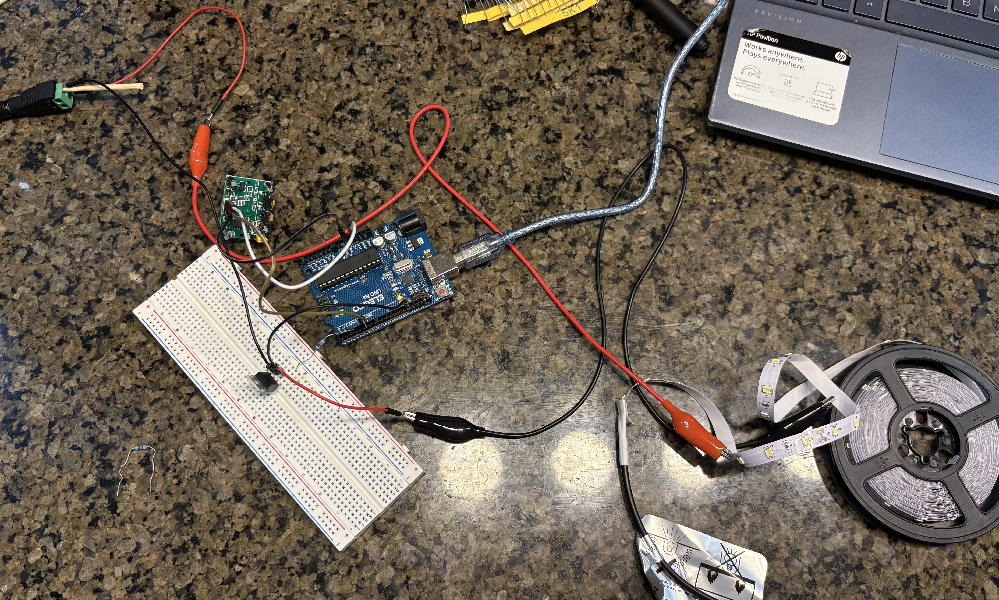
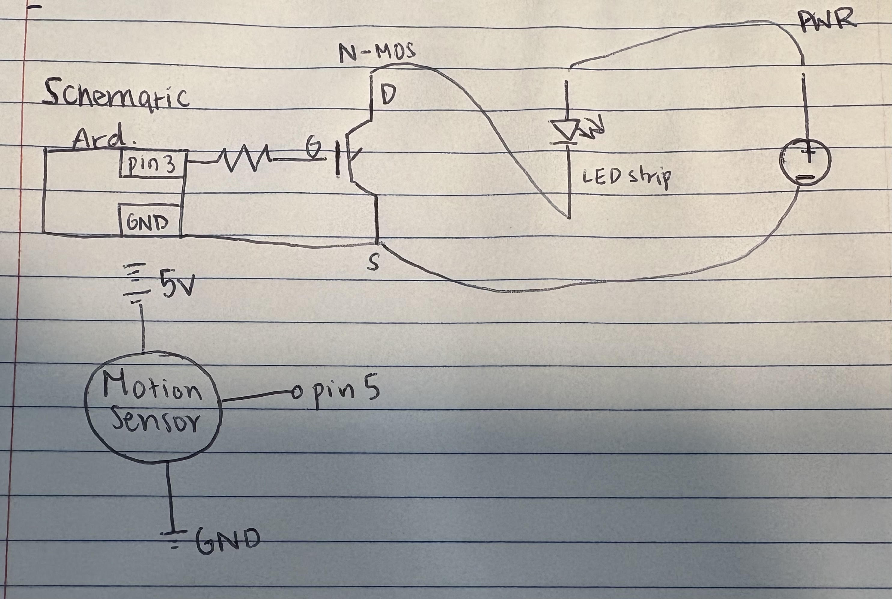

1. Why is an external power supply necessary in this circuit?
Using an external power supply ensures that the high-power load does not draw excessive current from the Arduino, which could damage it.
Welcome to my documentation for the High(er) Voltage and Transistors assignment!
A demonstration of the High Voltage and Transistor circuit in action.

Caption: A clear view of the circuit components, including the MOSFET, power supply, and load.

Caption: Justification of resistor values and expected current flow in the circuit. The MOSFET is rated for a maximum current of X A, while our load only requires Y A, ensuring safe operation.
#include // Standard Arduino library
int PIR_PIN = 5; // Digital input pin for PIR sensor
int LED_PIN = 3; // PWM output pin for MOSFET gate
void setup() {
pinMode(PIR_PIN, INPUT); // Sets PIR sensor as input
pinMode(LED_PIN, OUTPUT); // Sets MOSFET gate as output
digitalWrite(LED_PIN, LOW); // Ensures MOSFET is off initially
}
void loop() {
int motionDetected = digitalRead(PIR_PIN); // Reads PIR sensor state
if (motionDetected) {
analogWrite(LED_PIN, 255); // Shows full brightness when motion detected
delay(1000); // Keeps lights on for 5 seconds
} else {
analogWrite(LED_PIN, 0); // Turns off LED strip
}
}
Caption: The led is set at low. The MOSFET used in this circuit can handle a maximum current of 30A, while the LED strip draws only about 2A (assuming 1A per meter for a 2-meter strip at 12V). Since 2A is much lower than the MOSFET’s limit, the transistor operates well within its safe range, preventing overheating or failure. This ensures reliable switching of the LED strip without exceeding the MOSFET’s current-handling capacity.
Using an external power supply ensures that the high-power load does not draw excessive current from the Arduino, which could damage it.
The MOSFET acts as an electronic switch, allowing current to flow to the load when a voltage is applied to its gate, controlling high power devices with low-power signals.
Without the gate resistor, excessive current could flow from the Arduino pin to the MOSFET, potentially damaging both components and causing unstable switching behavior.